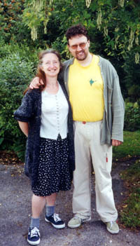
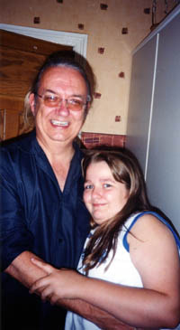
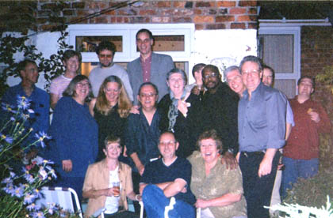

Chapter 22. Epilogue
Marilyn was the final event in the life of Genesis Theatre. Not long after that Chris and Amanda Fogg moved to Somerset so we had no Director. That, as they say, was that.
 Over seven years we put together nine different shows, five world premieres including two original musicals, and two northwest premieres.
I personally had never been on stage in a major production until we did Hair. I could never have foreseen myself playing and being responsible for musical direction before that show and consider that it changed my career and increased my confidence as a musician. As for the music I wrote I still consider much of it to be my best work in the popular genre.
To say my time with Genesis Theatre was memorable would be putting it mildly. It was probably the most fulfilling and happy seven years I had ever had up to then. I also forged a lot of close friendships with the other people in the group, including Mary Mitchell (Clark), Graham Brittain, Alison Davies, Chas Coghill and of course Chris and Amanda Fogg whom I knew from even before Genesis Theatre.
It is indeed a measure of the times we spent together that 20 years on, a number of us still regularly meet and have been constant and firm friends ever since. We are of course now all in our 50's but we can still do a pretty good 'Aquarius' or even ' Stag' when required.
When Genesis Theatre folded in 1982 after Marilyn, I married, settled down, and had four children (Alexander, Kyle, Jessica and Felicity) which does change one's priorities somewhat! I found that the necessity to write songs largely evaporated. There was no personal need to pour out my life in a diary of songs, which was largely the case with my back catalogue. Likewise there was no Theatre group to write songs especially for. Chris was the principle lyricist and was now based in Somerset which does stop us getting together as much as we used to.
However I never stopped writing instrumental music. Being a fully fledged classical guitarist I constantly had (and still have) a piece or two on the drawing board and to date have written dozens of works for one, two or three guitars, together with additional instruments such as the flute, viola, cello and even the bayan (a Russian button accordion).
 In 1995 a chance event led to the formation of Acoustic Moods, initially featuring Tony Ward who was a pupil of mine, and former Genesis Theatre Bassist Mike Bonwick. We started playing a mix of folk music and instrumental arrangements of the progressive rock band Genesis (no relation!) who had influenced me throughout the time of the Theatre group. Mike eventually bowed out and was replaced by Dan Coghill, the son of Chas the original guitarist in the Theatre Group. By now we had progressed to playing our own instrumental music which provides me with another outlet. The original material tends to be written either by one member working alone (as in my case producing two large set pieces) or in a group jamming situation, where any idea can spark off a new composition; a very different way to how I used to write. This has produced some of the most interesting material that we play. We are still going strong, have done several albums of Genesis covers and are looking to record one of completely original material.
The songs I wrote before 1982 were all recorded on a home cassette machine, more for memory's sake rather than for posterity! This happy co-incidence has led to Tony and myself re-evaluating and extensively cleaning up these recordings, along with the Genesis Theatre ones. This revitalised my interest in my earlier work, prompting me to write down all the treasured memories I have of it.
Looking back, where else could Genesis Theatre have gone?
Pete Townsend took the other theatre group's Tommy to the professional London stage. Had we been three weeks earlier that might have been us.
If the Bee Gee's had waited another year to sue Robert Stigwood we would have signed a contract for Stag with him and finished the recording. Who knows what would have happened to it after that..?
If Henley's had not taken Renault over we would have done War of the Worlds with Jeff Wayne's full approval. Who knows where that would have led?
If Marilyn had not had another show with the same name at the same time, maybe we would have had the chance to take it further.
If Chris Fogg had not moved down to Somerset would we have done any more productions together? (Almost certainly!)
Obviously my life would have been quite different if any of those had happened. It is strange how fate takes a hand.
Regardless, we at least had seven stupendous years of wonderful times, and recordings and memories to last a lifetime.
